Reservoir Dogs
Main Content
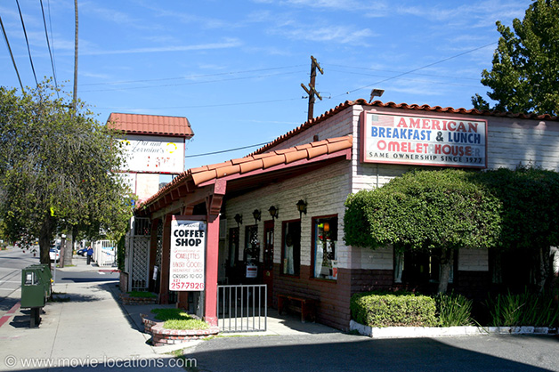
Discover the filming locations for Quentin Tarantino's first movie, around Los Angeles including the site of the (since demolished) warehouse, the robbery itself, the subsequent chase, shootout and more.
It seems unbelievable that the Reservoir Dogs warehouse was torn down, but I guess no one realised the significance at the time.
Just imagine the tourist bucks, $5 entrance, Stealers Wheel CDs, souvenir rubber ears.... missed opportunity or what?
Well you can still worship at the site (it’s now – inevitably for Los Angeles – a parking lot) or check out the alleyways of the bloody shootout after the robbery.
Although the Dogs’ warehouse has been demolished, you’re sure to recognise the site, now a car park, on 59th Avenue, just south of Figueroa Street in Highland Park. Fittingly, the building (which was also used for Mr Orange’s scuzzy hotel room) was a former mortuary.
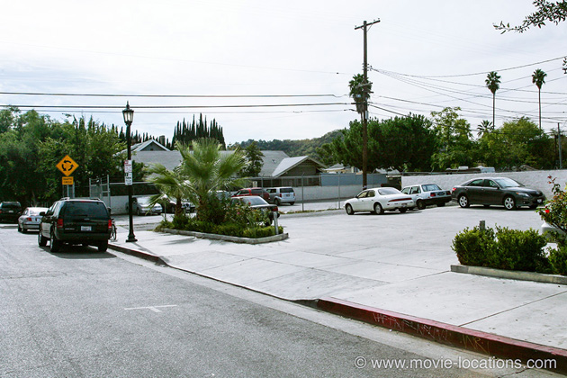
Since the budget was so tight, the upper floor of the building was used as Mr Orange's (Tim Roth) apartment. When he gets the call that the job is on and looks out of the window, you can see a view of Avenue 59.
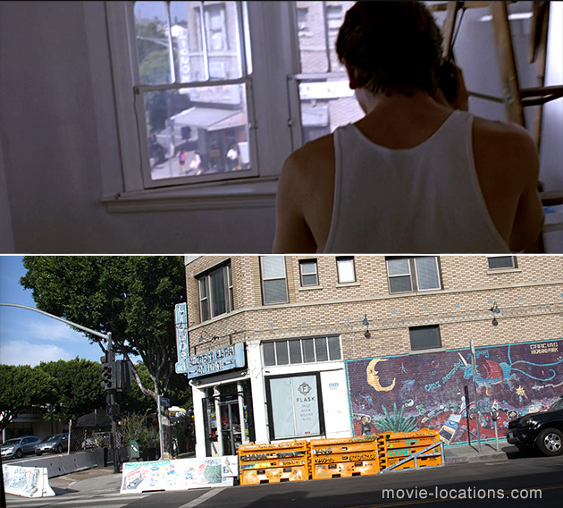
And when Mr White (Harvey Keitel) and Nice Guy Eddie (Chris Penn) watch him from the car as he leaves his apartment, they're parked right outside on Avenue 59 looking towards Figueroa.
BTW, the corner establishment is now Jeff's Table, 5900 North Figueroa Street, the old liquor store has been repurposed as a deli.
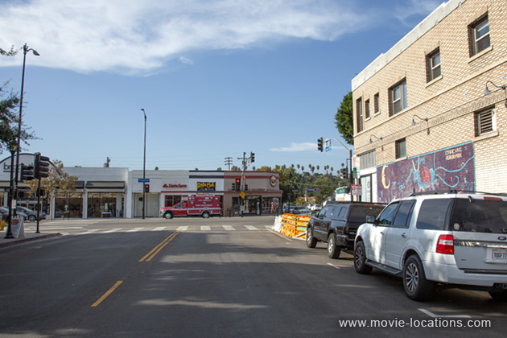
The best Dogs experience is breakfast at Pat and Lorraine's, 4720 Eagle Rock Boulevard, Eagle Rock, northeast of downtown Los Angeles, which is where the Dogs gather to discuss Madonna lyrics and the ethics of tipping. The staff are extremely friendly, so ignore mean old Mr Pink and leave a tip.
As you can see, when I visited it was almost Halloween.
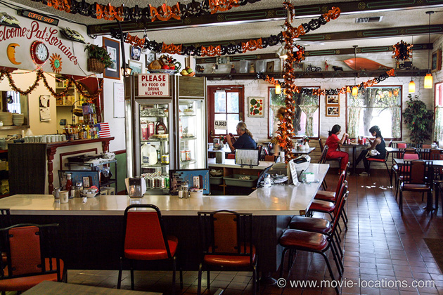
The robbery itself was filmed up in the San Fernando Valley. The forbidding brick ‘jewellery store’ – ‘Karina’s’ (named after Jean-Luc Godard’s muse, and one-time wife, Anna Karina), is a mirror/picture frame supplier at 2612 West Burbank Boulevard at Wyoming Avenue in Burbank.
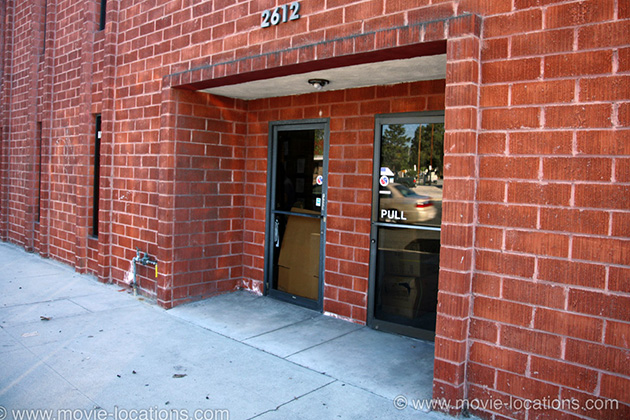
The aftermath, though, is filmed way to the northeast of Downtown LA in the Highland Park district. More movie references abound – Mr Blue is “Dead as Dillinger” and Laurence Tierney (gangleader Joe Cabot) played Dillinger in 1945 for Monogram Pictures, the company to whom Jean-Luc Godard dedicated A Bout de Souffle.
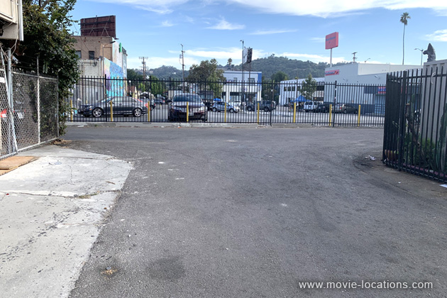
At the wheel of the car, Mr Brown (Tarantino himself) gets shot and drives into an alleyway, where he slumps forward an dies. It's here that Mr Orange looks on in horror as Mr White kills two cops. This alleyway runs from Figueroa Street to Marmion Way, in the block between Avenue 55 and Avenue 56, and remains pretty much unchanged.
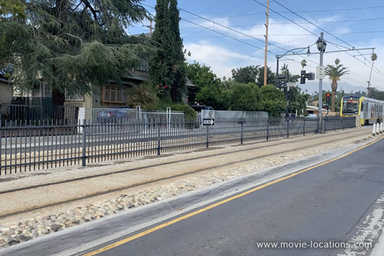
Mr White and Mr Orange emerge from the alleyway alongside 5518 Marmion Way, near Avenue 56, where they try to commandeer a car, and where Mr Orange is shot by the driver.
The area is a damn sight smarter than when I first visited in 1996 (I felt very uncomfortable back then) and, as you can see, the Gold Line of the LA Metro to Pasadena and the east, runs along the middle of Marmion Way.
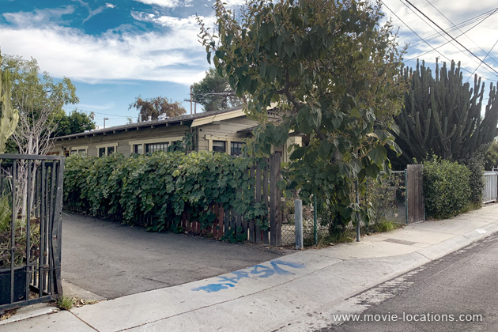
After the failed heist, Mr Pink (Steve Buscemi) shoots his way out and heads down Figueroa Street (play Spot-the-camera crew in the shop windows in this scene) between Avenue 51 and Avenue 50.
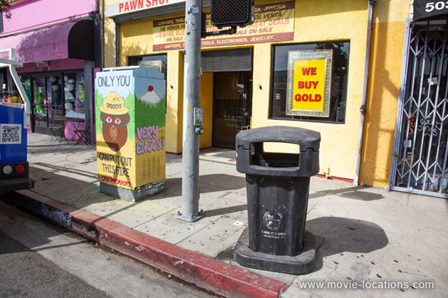
The production didn't have a permit to close down streets so, craftily, only that one single block is used. To lengthen the foot chase, Mr Pink and the cops are seen running past the same shopfronts.
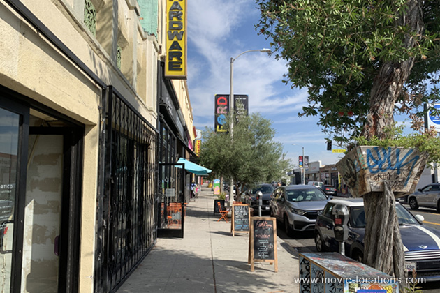
They also run in different directions from shot to shot, on opposite sites of the street, toward Avenue 50 or toward Avenue 51.
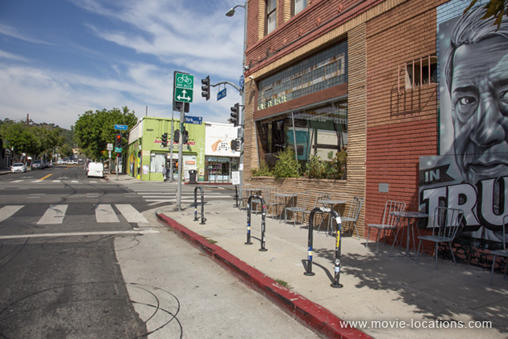
But finally it's toward Avenue 50, where Mr Pink finally gets hit by a car at the corner of York Boulevard, alongside what is now Cafe de Leche. He successfully commandeers the motor and makes off along Avenue 50.

The café, where Mr Orange meets up with his superior, is Johnie’s Coffee Shop, 6101 Wilshire Boulevard at Fairfax Avenue (a familiar location – it’s where Anthony Edwards receives news of impending apocalypse in Miracle Mile, Eds Norton and Furlong stop off in American History X and where the Dude discusses the severed toe with friend Walter in The Big Lebowski. It’s now closed, though still occasionally used for filming.
Back in 1996, I managed to get this shot of the interior before it closed.
The graffiti-covered walls, where Orange rehearses his druggy cover story, could – until 2006 – be seen at the junction of Beverly Boulevard and Second Street and Toluca Street, just northwest of downtown, but no more.
The location was a platform on LA’s original metro train line, dating from the early 1900s, which ran through a tunnel under the hill to the south. A huge apartment complex called Belmont Station has been built on the site – into which a section of the Belmont Tunnel/Toluca Substation has been integrated.
He retails the story to the other Dogs in The Lodge, 4923 Lankershim Boulevard (tel: 818.769.7722) between Vineland and Magnolia, which is in reality a North Hollywood gay bar, and flashbacks to the toilets of the Park Plaza Hotel, 607 South Park View Street, midtown Los Angeles.
“The hotel has been featured many times in films,” claimed Tarantino, “but I’m the only director that has used only its bathroom.”. Maybe, but it’s a close thing. The Park Plaza supplied the men’s room at ‘Capitol Pictures’ for the Coens’ Barton Fink, but it was also used for the USO dance scene.
One of the most popular locations in Los Angeles, the Park Plaza has been given a major makeover but no loner functions as a hotel. This popular film location can also be seen in Martin Scorsese’s New York, New York, Steven Spielberg’s Hook, Richard Attenborough's biopic Chaplin, with Robert Downey Jr, and Christopher Nolan's The Prestige among many others.
Visit Info
Visit The Film Locations
California | Los Angeles
Visit: Los Angeles
Flights: Los Angeles International Airport (LAX), 1 World Way, Los Angeles, CA 90045 (tel: 424.646.5252)
Travelling around: Los Angeles Metro
Dine at: Pat and Lorraine's Coffee Shop, 4720 Eagle Rock Boulevard, Eagle Rock, Los Angeles, CA 90041 (tel: 323.257.7926)